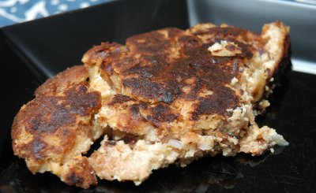

| Zutaten für 2 Personen: | |
| 2 | alte Brötchen |
| 4 | Zwiebeln |
| Milch | |
| 2 | Eier |
| Salz | |
| Fett | |
Brötchen schneiden
Zwiebeln grob schneiden und dazu mischen. Kalte Milch darüber giessen und zugedeckt 2 Stunden stehen lassen. Bis dahin sollte die Milch aufgesogen sein; zwischendurch kann man 2 - 3 mal wenden.
Eier mit Salz verquirlen, mit Brot-Zwiebelmasse mischen und die ganze Menge wie Rösti in heisser Butter oder in heissem Fett in der Bratpfanne halb zugedeckt braten.
Damit der Zwiebel-Brot-Rösti-Kuchen beidseitig schön hellbraun wird, muss man auf kleinem Feuer während ca. 40 Minuten langsam braten.
Herbert Eigenmann, Code: ZLR
Ein ganz interessantes Rezept. Eine Rösti ohne Kartoffeln?! So eine Art Rösti für Kartoffel-Allergiker? Aber sie sieht echt einer Rösti ähnlich und schmeckt auch ganz passabel. RE 7.3.2009
@LINKBACK_TAG@ @WAKELOCK@